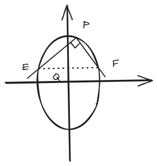
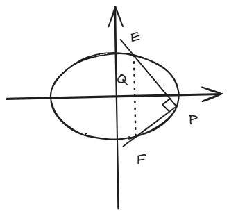

结论：椭圆上定点关于两动点直线垂直的定点问题
Abstract
这个结论是齐次化的另一个经典例子。
两动点与定点构成的垂直的直线，过一个定点。
一、结论描述
焦点在x轴：标准方程为
\[
\frac{x^2}{a^2} + \frac{y^2}{b^2} = 1 \quad (a > b)
\]
定点\( P(x_0, y_0) \)在椭圆上，若\( PE \perp PF \)（\( k_{PE} \cdot k_{PF} = -1 \)），则直线\( EF \)恒过定点：
\[
Q\left( \frac{a^2 - b^2}{a^2 + b^2}x_0, \ -\frac{a^2 - b^2}{a^2 + b^2}y_0 \right)
\]

焦点在y轴：标准方程为
\[
\frac{x^2}{b^2} + \frac{y^2}{a^2} = 1 \quad (a > b)
\]
定点\( P(x_0, y_0) \)在椭圆上，若\( PE \perp PF \)（\( k_{PE} \cdot k_{PF} = -1 \)），则直线\( EF \)恒过定点：
\[
Q\left( -\frac{a^2 - b^2}{a^2 + b^2}x_0, \ \frac{a^2 - b^2}{a^2 + b^2}y_0 \right)
\]

特别地，当椭圆为圆（\( a = b \)）时，\( Q \)与原点\( O \)重合。
Tip
老实说，这个结论我记不住，但是有齐次化思路不影响我在考场上临时计算。
这种结论一般是作为大题出现（如果出现为小题反而丧失了这套题的含金量，“大题改小题”这种纯吃人计算能力而拖延考生时间的例子我是不赞同的捏，不过这是个人意见，请勿在意）。
二、结论证明（齐次化方法）
以\( P(x_0, y_0) \)为原点平移坐标系，设新坐标为\( (x,y) \)，则：
\[
x = x + x_0, \quad y = y + y_0
\]
椭圆方程变换为：
\[
\frac{(x + x_0)^2}{a^2} + \frac{(y + y_0)^2}{b^2} = 1
\]
展开后利用\( \frac{x_0^2}{a^2} + \frac{y_0^2}{b^2} = 1 \)消去常数项，得：
\[
\frac{x^2}{a^2} + \frac{y^2}{b^2} + \frac{2x_0 x}{a^2} + \frac{2y_0 y}{b^2} = 0 \quad \text{(1)}
\]
设平移后直线\( EF \)的方程为：
\[
mx + ny = 1 \quad \text{(2)}
\]
将方程(1)的一次项替换为方程(2)的倍数以实现齐次化：
\[
\frac{x^2}{a^2} + \frac{y^2}{b^2} + \left( \frac{2x_0}{a^2}x + \frac{2y_0}{b^2}y \right)(mx + ny) = 0
\]
展开并整理为齐次二次方程：
\[
\left( \frac{1}{a^2} + \frac{2x_0 m}{a^2} \right)x^2 + \left( \frac{2x_0 n}{a^2} + \frac{2y_0 m}{b^2} \right)xy + \left( \frac{1}{b^2} + \frac{2y_0 n}{b^2} \right)y^2 = 0
\]
令\( k = \frac{y}{x} \)，方程两边除以\( x^2 \)得：
\[
\left( \frac{1}{a^2} + \frac{2x_0 m}{a^2} \right) + \left( \frac{2x_0 n}{a^2} + \frac{2y_0 m}{b^2} \right)k + \left( \frac{1}{b^2} + \frac{2y_0 n}{b^2} \right)k^2 = 0
\]
由\( k_1 k_2 = -1 \)（\( PE \perp PF \)），根据韦达定理：
\[
k_1 k_2 = \frac{\frac{1}{a^2} + \frac{2x_0 m}{a^2}}{\frac{1}{b^2} + \frac{2y_0 n}{b^2}} = -1
\]
化简得约束条件：
\[
\frac{1 + 2x_0 m}{a^2} = -\frac{1 + 2y_0 n}{b^2} \quad \text{(3)}
\]
解得：
\[
Q\left( \frac{a^2 - b^2}{a^2 + b^2}x_0, \ -\frac{a^2 - b^2}{a^2 + b^2}y_0 \right)
\]
三、例题
题目：椭圆\( C: \dfrac{x^2}{4} + y^2 = 1 \)，定点\( P(1, \dfrac{\sqrt{3}}{2}) \)，求满足\( PE \perp PF \)的直线\( EF \)所过定点\( Q \)。
解：
椭圆参数：\( a=2 \), \( b=1 \)，代入定点坐标公式：
\[
Q\left( \frac{4 - 1}{4 + 1} \cdot 1, \ -\frac{4 - 1}{4 + 1} \cdot \frac{\sqrt{3}}{2} \right) = \left( \frac{3}{5}, \ -\frac{3\sqrt{3}}{10} \right)
\]
答案：
\[
\boxed{Q\left( \dfrac{3}{5}, -\dfrac{3\sqrt{3}}{10} \right)}
\]
Tip
这种题有一种方法，叫特殊值法：带两组值进行计算，分别得到两条直线，算交点即可。
四、拓展结论
类比一：双曲线情形
焦点在x轴：标准方程为
\[
\frac{x^2}{a^2} - \frac{y^2}{b^2} = 1
\]
定点\( P(x_0, y_0) \)在双曲线上，若\( PE \perp PF \)，则直线\( EF \)恒过定点：
\[
Q\left( \frac{a^2 + b^2}{a^2 - b^2}x_0, \ \frac{a^2 + b^2}{a^2 - b^2}y_0 \right)
\]
焦点在y轴：标准方程为
\[
\frac{y^2}{a^2} - \frac{x^2}{b^2} = 1
\]
定点\( P(x_0, y_0) \)在双曲线上，若\( PE \perp PF \)，则直线\( EF \)恒过定点：
\[
Q\left( -\frac{a^2 + b^2}{a^2 - b^2}x_0, \ \frac{a^2 + b^2}{a^2 - b^2}y_0 \right)
\]
类比二：抛物线情形
开口向右：标准方程为\( y^2 = 4px \)，定点\( P(x_0, y_0) \)在抛物线上，若\( PE \perp PF \)，则直线\( EF \)恒过定点：
\[
Q(x_0 + 4p, -y_0)
\]
开口向左：标准方程为\( y^2 = -4px \)，定点\( P(x_0, y_0) \)在抛物线上，则定点为：
\[
Q(x_0 - 4p, -y_0)
\]
开口向上：标准方程为\( x^2 = 4py \)，定点\( P(x_0, y_0) \)在抛物线上，则定点为：
\[
Q(-x_0, y_0 + 4p)
\]
开口向下：标准方程为\( x^2 = -4py \)，定点\( P(x_0, y_0) \)在抛物线上，则定点为：
\[
Q(-x_0, y_0 - 4p)
\]
推论一
\( k_{PE} \cdot k_{PF} = r\,\) （\(r\)为定值）的情况下仍然可以得到EF过定点的结论，具体思路和上述证明过程类似，只不过把-1换掉即可。
Tip
这也是我不推荐背这个结论而只记住思路的原因，毕竟换个r又要出重新去记忆...
推论二
在一、结论描述的条件下，\(Q\)坐标只与离心率\(e\)和定点\(P\)坐标有关。
证明：
以焦点在x轴的椭圆为例，我们已知\( Q \)的坐标为：
\[
Q\left( \frac{a^2 - b^2}{a^2 + b^2}x_0, \ -\frac{a^2 - b^2}{a^2 + b^2}y_0 \right)
\]
将\( b^2 = a^2(1 - e^2) \)代入分子和分母：
\[
\frac{a^2 - b^2}{a^2 + b^2} = \frac{a^2 - a^2(1 - e^2)}{a^2 + a^2(1 - e^2)} = \frac{a^2 e^2}{a^2(2 - e^2)} = \frac{e^2}{2 - e^2}
\]
因此，\( Q \)的坐标可改写为：
\[
Q\left( \frac{e^2}{2 - e^2}x_0, \ -\frac{e^2}{2 - e^2}y_0 \right)
\]
显而易见，其实这也说明了定点\( Q \)为\( P \)关于椭圆中心的调和共轭点，缩放比例由离心率决定。